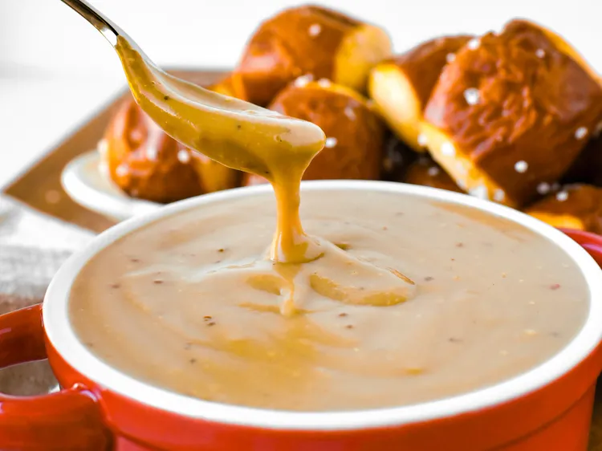

Cheese Dip

Description
A warm beer cheese dip, made with dark lager and sharp Cheddar cheese, pairs well with Bavarian-style pretzels and bratwurst, and also works as a topping for sliders, or as a change to ordinary mac and cheese.
Ingredients
- Butter
- All-purpse flour
- Milk
- German dark beer
- Stone ground mustard
- Worcestershine sauce
- Grated sharp cheddar cheese
- Crushed Aleppo chile peppers
- Salt & Black paper
Steps
- Gather all ingridients
- Melt butter in a heavy saucpan over medium heat. Whisk in flour until smooth
- Continue whisking; pour in milk. Whisk in beer; cook until mixture thcikens, 3 to 5 minutes.
- Stir in mustard and Worcestershine sauce. Add chees; stir until cheese is melted. Stir in Aleppo pepper; Season with salt and black pepper
- Serve immediately